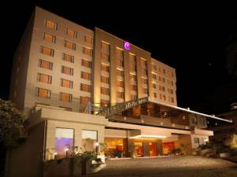

Hotels
Hotels
The Residency Towers

The Residency Towers is a leading luxury hotel in the capital city of Tamil Nadu,
Chennai. Amidst a pleasing ambiance and careful attention, the hotel is an ideal place
to stay for a comfortable and joyful vacation. The Residency Towers has a range of
facilities to keep its guests at ease.
The Chancery Pavillion

The Chancery Pavilion, Bangalore's new-age 5 star luxury business hotel of
discerning choice. Set on an elevation amidst the heart of Bangalore’s central business
districton Residency Road, The Chancery Pavilion is the perfect destination for business
travelers, tourists, medical visits and even quick getaways.The vast array of 225 rooms
and suites are categorized into: the First Citizen Suite, Executive Suite, Club Pavilion
Rooms, Deluxe room & Superior Rooms.
Vivanta by Taj
Vivanta by Taj designed to delight high fliers from all angles.
Laidback but efficient. Elegant and spacious. Directly connected to the heart of the
city. With easy access to the Sector 21 Metro station.Spanning 7 acres, Vivanta by
Taj- Dwarka, New Delhi is one of the best 5-Star hotels near New Delhi airport. It
wraps you in luxury the minute you step in. The stylish space is home to a chic lobby,
never-ending rooms and multiple outlets for the finest culinary experiences. A 20-minute
drive eastward leads you to the heart and soul of the city - Lutyens New Delhi!. And the
domestic and international airports are an easy 15-minute drive westward.
Back